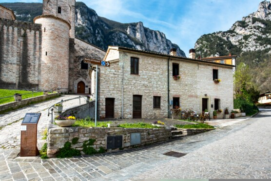

Genga · Marche · Italia
La Voce del Sentino
 San Vittore · Genga
San Vittore · Genga
Abbiamo scelto questo nome perché crediamo che il lusso più grande, oggi, sia ritrovare il ritmo della natura.
Il fiume che scorre qui davanti a Voi, il Sentino, non è solo un elemento del paesaggio: è l'instancabile scultore che in un milione di anni ha dato vita alle Grotte di Frasassi.
Mettetevi comodi, aprite la finestra e tendete l'orecchio: la sua voce è qui per accompagnare il Vostro riposo, rinfrescare le Vostre giornate e ricordarVI che la meraviglia inizia appena fuori dalla porta di casa.
Vi auguriamo un soggiorno indimenticabile tra relax, acqua e roccia.
« Il lusso più grande, oggi, è ritrovare il ritmo della natura. »
Si narra che migliaia di anni fa il fiume Sentino si innamorò della grande montagna di roccia che sbarrava il suo cammino.
Non potendo scavalcarla decise di sussurrarle la sua melodia. Giorno dopo giorno, cercando un passaggio nel suo cuore di pietra, con la pazienza infinita che solo l'acqua possiede, il fiume trovò la strada verso il buio più profondo.
Lì, nel silenzio della terra, l'acqua iniziò a danzare con la roccia formando cattedrali di cristallo, vele bianche e giganti di calcare. Creò così quelle che oggi il mondo chiama «Grotte di Frasassi».





Scrivici per conoscere il prezzo su misura per il tuo momento speciale. Rispondiamo a ogni richiesta personalmente, con cura.